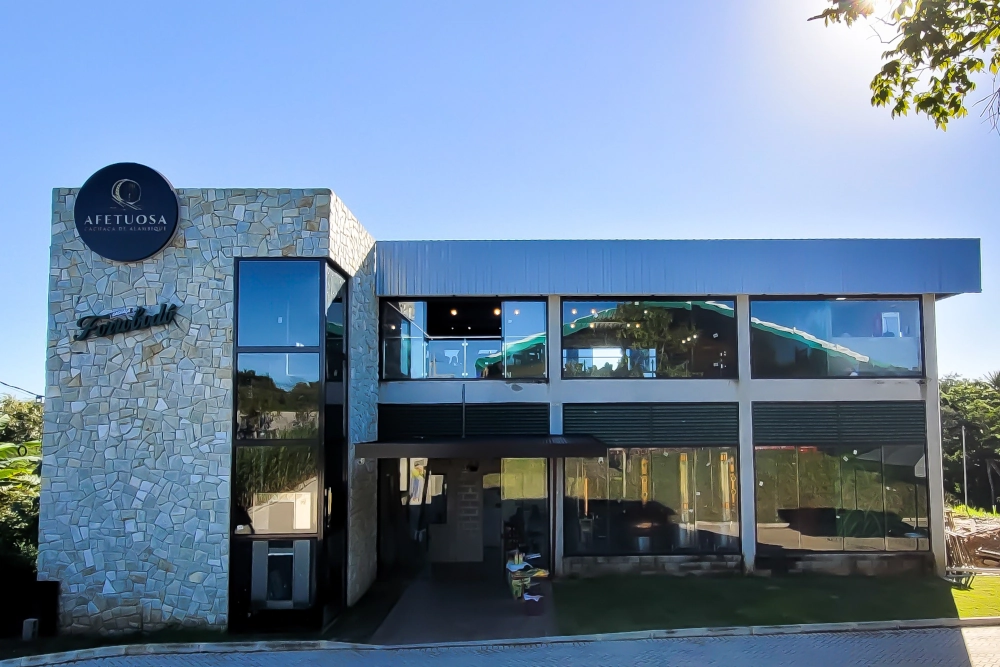
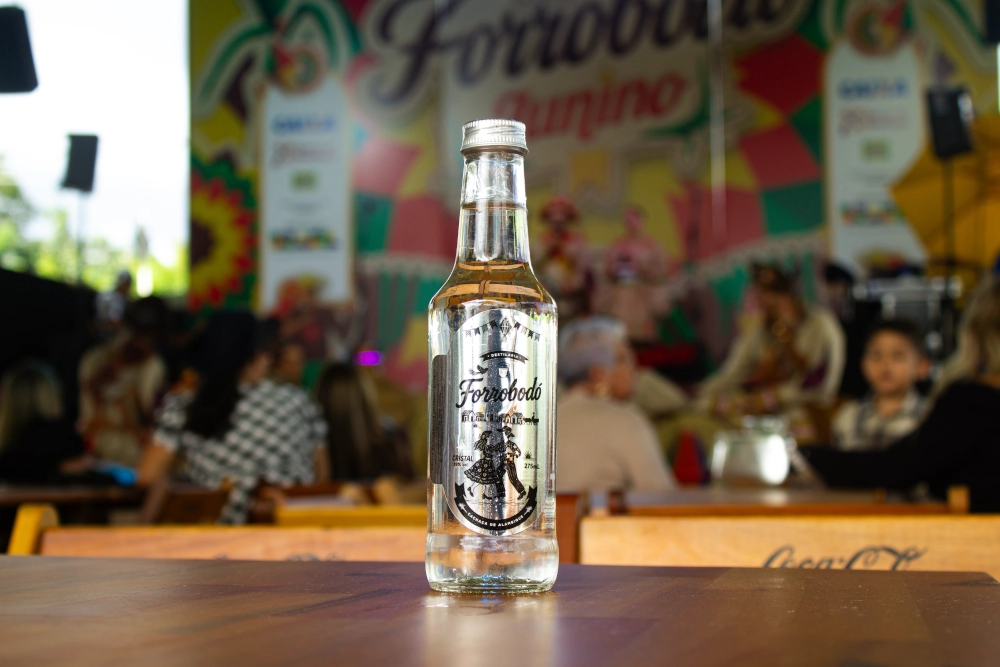
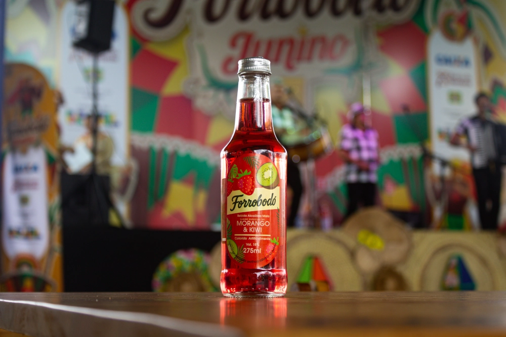
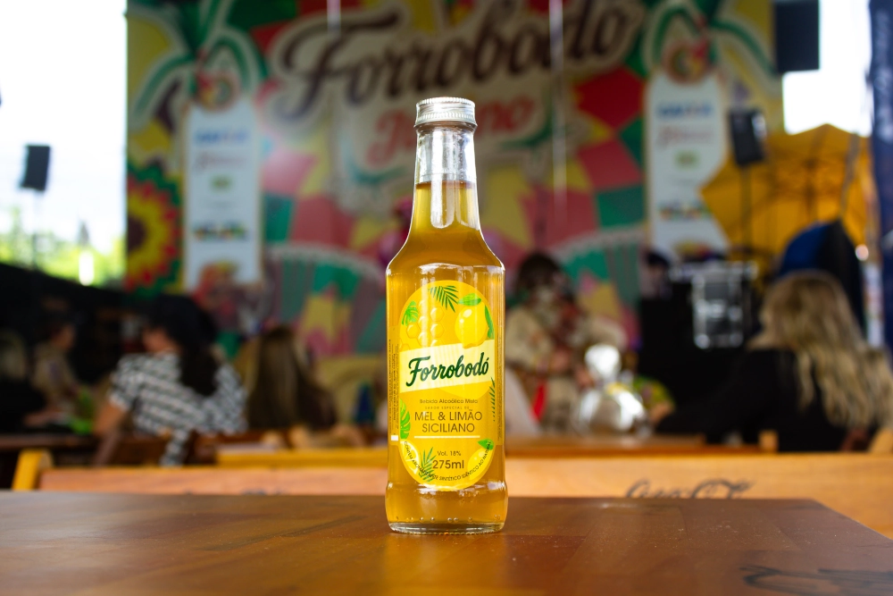
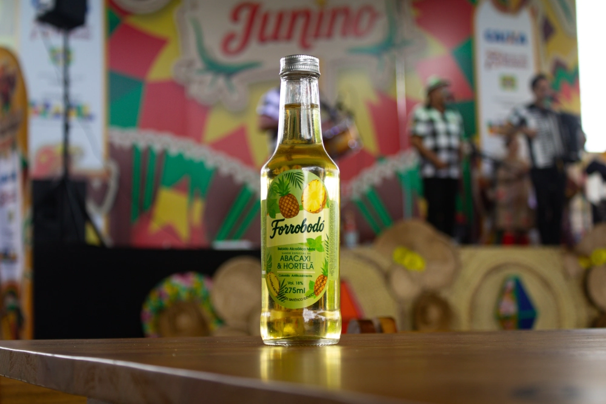

CACHAÇA FORROBODÓ
O sabor que faz a festa acontecer
Quatro sabores irresistíveis, criados para transformar qualquer encontro em um momento especial.

SOBRE NÓS
Tradição que vira festa
A Paraíba é um dos berços da cachaça brasileira. Com clima favorável e engenhos históricos, o estado consolidou-se como uma das principais referências na produção de cachaça.
É dessa terra que nasce a Forrobodó. Produzida no Engenho Afetuosa, em Lagoa Seca, com sabores pensados pra quem gosta de reunir a galera, brindar sem cerimônia e aproveitar cada gole com leveza e autenticidade.

PRODUTOS
Escolha seu Sabor
Cristal
A escolha perfeita para quem valoriza um sabor autêntico em qualquer ocasião.

Morango & Kiwi
Doce na medida certa, com um toque cítrico que faz toda diferença.

Mel & Limão
A doçura do mel encontra o toque cítrico do limão siciliano em uma combinação leve, refrescante e irresistível.

Abacaxi & Hortelã
Refrescante e tropical. A dupla que traz aquele clima de verão pra qualquer roda de amigos.

VISITAÇÃO
Visite o Engenho Afetuosa
Abriremos nossas portas pra você conhecer de perto o processo, sentir os aromas e provar os 4 sabores de Forrobodó direto da fonte.
RESERVAR EXPERIÊNCIAOnde a História Vive
O Engenho Afetuosa está situado a poucos minutos de Campina Grande, passando pelo Atacadão do Jardim Tavares em direção à cidade de Lagoa Seca.
BR-104, KM 117 • Lagoa Seca, PB
Sábado e domingo, das 13h às 17h
AINDA TEM DÚVIDAS?
Dúvidas Frequentes
Informações sobre sabores, visitação, localização e disponibilidade da Cachaça Forrobodó.
O Engenho Afetuosa está localizado na BR-104, KM 117, em Lagoa Seca - PB, a poucos minutos de Campina Grande.
Hoje a Forrobodó tem 4 sabores: Cristal, Morango & Kiwi, Mel & Limão e Abacaxi & Hortelã. Cada um com sua própria personalidade, todos feitos a partir da mesma cachaça de alambique.
Sim! Recebemos visitantes sábado e domingo, das 13h às 17h, para conhecer de perto o processo de produção e provar os sabores da Forrobodó.
Recomendamos agendar com antecedência para garantir uma experiência mais cuidadosa e personalizada para você e seu grupo.
Você vai conhecer as etapas da produção e provar os 4 sabores da Forrobodó direto da fonte.
Nossos produtos estão disponíveis no próprio Engenho e em pontos de venda selecionados. Entre em contato para saber o revendedor mais próximo.
Sim, organizamos experiências especiais para grupos, empresas e eventos privados. Fale com a nossa equipe para montar um roteiro sob medida.